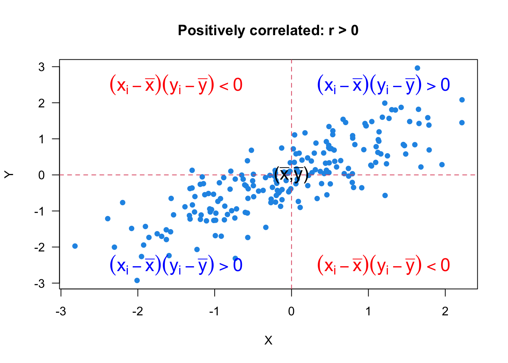
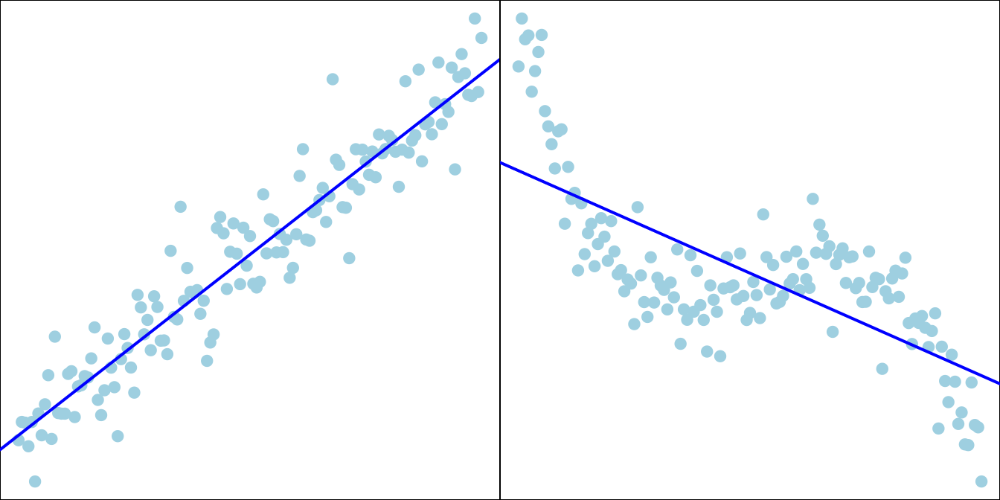
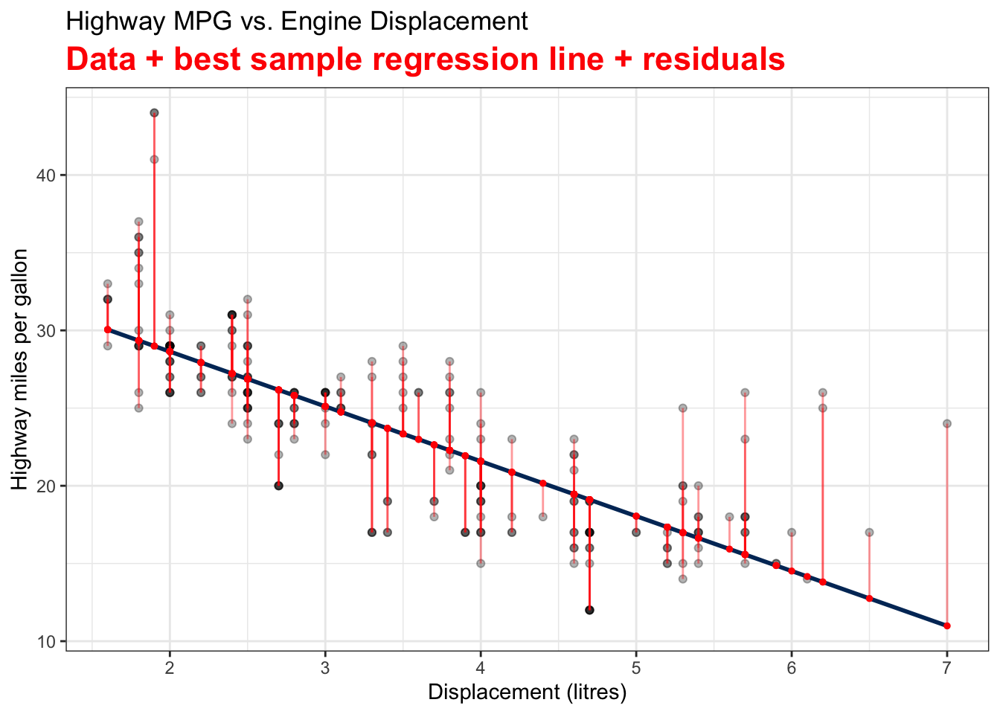

23 Linear Regression
23.1 Correlation
Relationship Between 2 Numerical Variables
- Depending on the situation, the two variables can be classified as the explanatory variable and the response variable. (Discussed in Regression)
- However, there is not always an explanatory-response relationship.
- Examples:
- height and weight
- income and age
- SAT/ACT math score and verbal score
- amount of time spent studying for an exam and exam grade
Scatterplots

- The overall pattern can be described in several ways.
- Form: linear or clusters
- Direction: positively associated or negatively associated
- Strength: how close the points lie to a line/curve
Linear Correlation Coefficient
- The sample correlation coefficient, denoted by \(r\), measures the direction and strength of the linear relationship between two numerical variables: \[\small r :=\frac{1}{n-1}\sum_{i=1}^n\left(\frac{x_i-\overline{x}}{s_x}\right)\left(\frac{y_i-\overline{y}}{s_y}\right) = \frac{\sum_{i=1}^n(x_i-\overline{x})(y_i-\overline{y})}{\sqrt{\sum_{i=1}^n(x_i-\overline{x})^2\sum_{i=1}^n(y_i-\overline{y})^2}}\]
- \(-1 \le r\le 1\)
- \(r > 0\): The larger value of \(X\) is, the larger value of \(Y\) tends to be.
- \(r = 1\): Perfect positive linear relationship.

- \(r < 0\): The larger value of \(X\) is, the smaller value of \(Y\) tends to be.
- \(r = -1\): Perfect negative linear relationship
- \(r = 0\): No linear relationship.
- If the explanatory and response variables are switched, \(r\) remains the same.
- \(r\) has no units of measurement, so scale changes do not affect \(r\).
Example
- It is possible that there is a strong relationship between two variables, but they still have \(r = 0\).

Example in R

23.2 Introduction to Regression
What is Regression?
- Regression models the relationship between one or more numerical/categorical response variables \((Y)\) and one or more numerical/categorical explanatory variables \((X)\).
- A regression function, \(f(X)\), describes how a response variable, \(Y\), on average, changes as an explanatory variable, \(X\), changes.
- Examples:
- College GPA \((Y)\) vs. ACT/SAT score \((X)\)
- Sales \((Y)\) vs. Advertising Expenditure \((X)\)
- Crime Rate \((Y)\) vs. Median Income Level \((X)\)

Unknown Regression Function
- The true relationship between \(X\) and the mean of \(Y\), the regression function \(f(X)\), is unknown.
- The collected data \((x_1, y_1), (x_2, y_2), \dots, (x_n, y_n)\) are all we know and have.

- Goal: Estimate \(f(X)\) from our data, and use it to predict the value of \(Y\) given a value of \(X\).
Simple Linear Regression
- Start with simple linear regression.
- There is only one predictor, \(X\) (known and constant), and one response variable, \(Y\).
- The regression function used for predicting \(Y\) is a linear function.
- Use a regression line in an X-Y plane to predict the value of \(Y\) for a given value of \(X = x\).
-
Math review: A linear function \(y = f(x) = \beta_0 + \beta_1 x\) represents a straight line.
- \(\beta_1\): slope, the amount by which \(y\) changes when \(x\) increases by one unit
- \(\beta_0\): intercept, the value of \(y\) when \(x = 0\)
- The linearity assumption: \(\beta_1\) does not change as \(x\) changes.
Sample Data: Relationship Between X and Y
- Real data \((x_i, y_i), i = 1, 2, \dots, n\) do not form a perfect straight line!
- \(y_i = \beta_0+\beta_1x_i + \color{red}{\epsilon_i}\)
- When we collect our data, at any given level of \(X = x\), \(y\) is assumed to be drawn from a normal distribution (for inference purpose).
- Its value varies and will not be exactly equal to its mean, \(\mu_y\).
- The mean of \(Y\) and \(X\) form a straight line.

Simple Linear Regression Model (Population)
- For the \(i\)-th measurement in the target population, \[Y_i = \beta_0 + \beta_1X_i + \epsilon_i\]
- \(Y_i\): the \(i\)-th value of the response (random) variable.
- \(X_i\): the \(i\)-th fixed known value of the predictor.
- \(\epsilon_i\): the \(i\)-th random error with the assumption \(\epsilon_i \stackrel{iid}{\sim} N(0, \sigma^2)\).
- \(\beta_0\) and \(\beta_1\) are model coefficients.
- \(\beta_0\), \(\beta_1\) and \(\sigma^2\) are fixed unknown parameters to be estimated from the sample data once we collect them.
Important Features of Model \(Y_i = \beta_0 + \beta_1X_i + \epsilon_i\)
\(\epsilon_i \stackrel{iid}{\sim} N(0, \sigma^2)\) \[\begin{align*} \mu_{Y_i \mid X_i} &= E(\beta_0 + \beta_1X_i + \epsilon_i) \\ &= \beta_0 + \beta_1X_i \end{align*}\]
- The mean response, \(\mu_{Y\mid X}\), has a straight-line relationship with \(X\) given by a population regression line \[\mu_{Y\mid X} = \beta_0 + \beta_1X\]

\[\begin{align*} Var(Y_i \mid X_i) &= Var(\epsilon_i) = \sigma^2 \end{align*}\]
- The variance of \(Y\) does not depend on \(X\).

\[\begin{align*} Y_i \mid X_i \stackrel{indep}{\sim} N(\beta_0 + \beta_1X_i, \sigma^2) \end{align*}\]
- For any fixed value of \(X_i = x_i\), the response, \(Y_i\), varies with \(N(\mu_{Y_i\mid x_i}, \sigma^2)\).
- Job: Collect data and estimate the unknown parameters \(\beta_0\), \(\beta_1\) and \(\sigma^2\)!
23.3 Fitting a Regression Line \(\hat{Y} = b_0 + b_1X\)
Idea of Fitting
- Given the sample data \(\{ (x_1, y_1), (x_2, y_2), \dots, (x_n, y_n)\},\)
- Which sample regression line is the best?
- What are the best estimators, \(b_0\) and \(b_1\), for \(\beta_0\) and \(\beta_1\)?
We are interested in \(\beta_0\) and \(\beta_1\) in the following sample regression model: \[\begin{align*} y_i = \beta_0 + \beta_1~x_{i} + \epsilon_i, \end{align*}\] or \[E({y}_{i}) = \mu_{y|x_i} = \beta_0 + \beta_1~x_{i}\]
We use the sample statistics \(b_0\) and \(b_1\), which are computed from our sample data, to estimate \(\beta_0\) and \(\beta_1\).
\(\hat{y}_{i} = b_0 + b_1~x_{i}\) is called the fitted value of \(y_i\) and is a point estimate of the mean, \(\mu_{y|x_i}\), and \(y_i\) itself.
Ordinary Least Squares (OLS)
- What does best mean?
- We want to choose \(b_0\) and \(b_1\) or the sample regression line \(b_0 + b_1x\) that minimizes the sum of squared residuals \(SS_{res}\).
- The residual, \(e_i = y_i - \hat{y}_i = y_i - (b_0 + b_1x_i)\), is a point estimate of \(\epsilon_i\).
- The sample regression line minimizes \(SS_{res} = e_1^2 + e_2^2 + \dots + e_n^2 = \sum_{i = 1}^n e_i^2\). \[\small{\begin{align} SS_{res} &= (y_1 - b_0 - b_1x_1)^2 + (y_2 - b_0 - b_1x_2)^2 + \dots + (y_n - b_0 - b_1x_n)^2\\ &= \sum_{i=1}^n(y_i - b_0 - b_1x_i)^2 \end{align}}\]
Visualizing Residuals


Least Squares Estimates (LSE)
In the least squares approach, we choose the \(b_0\) and \(b_1\) that minimize the \(SS_{res}\). \[(b_0, b_1) = \arg \min_{\beta_0, \beta_1} \sum_{i=1}^n(y_i - \beta_0 - \beta_1x_i)^2\]
MATH 1450 …
\[\color{red}{b_0 = \overline{y} - b_1\overline{x}}\]
\[\color{red}{b_1 = \frac{\sum_{i=1}^n(x_i - \overline{x})(y_i - \overline{y})}{\sum_{i=1}^n(x_i - \overline{x})^2} = \frac{S_{xy}}{S_{xx}} = r \frac{\sqrt{S_{yy}}}{\sqrt{S_{xx}}}},\] where \(S_{xx} = \sum_{i=1}^n(x_i - \overline{x})^2\), \(S_{yy} = \sum_{i=1}^n(y_i - \overline{y})^2\), \(S_{xy} = \sum_{i=1}^n(x_i - \overline{x})(y_i - \overline{y})\)
Estimation for \(\sigma^2\)
- We can think of \(\sigma^2\) as variance around the line or the mean square (prediction) error.
- The estimate of \(\sigma^2\) is the mean square residual, \(MS_{res}\): \[\hat{\sigma}^2 = MS_{res} = \frac{SS_{res}}{n-2} = \frac{\sum_{i=1}^n(y_i - \hat{y}_i)^2}{n-2}\]
- \(MS_{res}\) is often shown in computer output as \(\texttt{MS(Error)}\) or \(\texttt{MS(Residual)}\).
-
\(E(MS_{res}) = \sigma^2\)
- Therefore, \(\hat{\sigma}^2\) is an unbiased estimator for \(\sigma^2\) üëç.
23.4 Confidence Intervals and Hypothesis Testing for \(\beta_0\) and \(\beta_1\)
Confidence Intervals for \(\beta_0\) and \(\beta_1\)
- \(\frac{b_1 - \beta_1}{\sqrt{\hat{\sigma}^2/S_{xx}}} \sim t_{n-2}\); \(\quad \frac{b_0 - \beta_0}{\sqrt{\hat{\sigma}^2\left(\frac{1}{n} + \frac{\overline{x}^2}{S_{xx}}\right)}} \sim t_{n-2}\)
- The \((1-\alpha)100\%\) CI for \(\beta_1\) is \(b_1 \pm t_{\alpha/2, n-2}\sqrt{\hat{\sigma}^2/S_{xx}}\)
- The \((1-\alpha)100\%\) CI for \(\beta_0\) is \(b_0 \pm t_{\alpha/2, n-2}\sqrt{\hat{\sigma}^2\left(\frac{1}{n} + \frac{\overline{x}^2}{S_{xx}}\right)}\)
Hypothesis Testing
\(\beta_1\)
- \(H_0: \beta_1 = \beta_1^0 \quad H_1: \beta_1 \ne \beta_1^0\)
- Test statistic: Under \(H_0\), \[t_{test} = \frac{b_1 - \color{red}{\beta_1^0}}{\sqrt{\frac{\hat{\sigma}^2}{S_{xx}}}} \sim t_{n-2}\]
- Reject \(H_0\) in favor of \(H_1\) if
- \(|t_{test}| > t_{\alpha/2, \, n-2}\)
- \(\text{$p$-value} = 2P(t_{n-2} > |t_{test}|) < \alpha\)
\(\beta_0\)
- \(H_0: \beta_0 = \beta_0^0 \quad H_1: \beta_0 \ne \beta_0^0\)
- Test statistic: Under \(H_0\), \[t_{test} = \frac{b_0 - \color{red}{\beta_0^0}}{\sqrt{\hat{\sigma}^2\left(\frac{1}{n} + \frac{\overline{x}^2}{S_{xx}}\right)}} \sim t_{n-2}\]
- Reject \(H_0\) in favor of \(H_1\) if
- \(|t_{test}| > t_{\alpha/2, \, n-2}\)
- \(\text{$p$-value} = 2P(t_{n-2} > |t_{test}|) < \alpha\)
Interpretation of Testing Results
- \(H_0: \beta_1 = 0 \quad H_1: \beta_1 \ne 0\)
- Failing to reject \(H_0: \beta_1 = 0\) implies there is no linear relationship between \(Y\) and \(X\).

Test of Significance of Regression
-
Rejecting \(H_0: \beta_1 = 0\) could mean
- the straight-line model is adequate.
- better results could be obtained with a more complicated model.

23.5 Analysis of Variance (ANOVA) Approach
\(X\) - \(Y\) Relationship Explains Some Deviation
- If the data have no pattern, our best guess for \(Y\) would be \(\overline{y}\) (i.e., \(\hat{y}_i = \overline{y}\)).
- We would treat \(X\) and \(Y\) as uncorrelated.
- The (total) deviation from the mean is \((y_i - \overline{y})\)
- If \(X\) and \(Y\) are linearly related, fitting a linear regression model helps us predict the value of \(Y\) when the value of \(X\) is provided.
- \(\hat{y}_i = b_0 + b_1x_i\) is closer to \(y_i\) than \(\overline{y}\).
- The regression model explains some of the deviation of \(y\).
Partition of Deviation
- Total deviation = Deviation explained by regression + unexplained deviation
- \((y_i - \overline{y}) = (\hat{y}_i - \overline{y}) + (y_i - \hat{y}_i)\)
- \((19 - 9) = (13 - 9) + (19 - 13)\)

Sum of Squares (SS)
- \(\sum_{i=1}^n(y_i - \overline{y})^2 = \sum_{i=1}^n(\hat{y}_i - \overline{y})^2 + \sum_{i=1}^n(y_i - \hat{y}_i)^2\)
- Total SS \((SS_T)\) = Regression SS \((SS_R)\) + Residual SS \((SS_{res})\)
- \(df_T = df_R + df_{res}\)
- \(\color{blue}{(n-1) = 1 +(n-2)}\)
ANOVA for Testing Significance of Regression

- A larger value of \(F_{test}\) indicates that the regression is significant.
- Reject \(H_0\) if
- \(F_{test} > F_{\alpha, 1, n-2}\)
- \(\text{$p$-value} = P(F_{1, n-2} > F_{test}) < \alpha\).
- ANOVA is designed to test the \(H_0\) that all predictors have no value in predicting \(y\).
- In SLR, the \(F\)-test of ANOVA gives the same result as a two-sided \(t\)-test of \(H_0: \beta_1=0\).
Coefficient of Determination
- The coefficient of determination \((R^2)\) is the proportion of the variation in \(y\) that is explained by the regression model.
- It is computed as \[R^2 = \frac{SS_R}{SS_T} =\frac{SS_T - SS_{res}}{SS_T} = 1 - \frac{SS_{res}}{SS_T}\]
- \(R^2\) is the proportionate reduction of total variation associated with the use of \(X\).
- (a) \(\hat{y}_i = y_i\) and \(\small SS_{res} = \sum_{i=1}^n(y_i - \hat{y}_i)^2 = 0\). (b) \(\hat{y}_i = \overline{y}\) and \(\small SS_R = \sum_{i=1}^n(\hat{y}_i - \overline{y})^2 = 0\).

23.6 Prediction
Predicting the Mean Response
- With the predictor value \(x = x_0\), we want to estimate the mean response \(E(y\mid x_0) = \mu_{y|x_0} = \beta_0 + \beta_1 x_0\).
- Example: The mean highway MPG \(E(y \mid x_0)\) when displacement is \(x = x_0 = 5.5\).
- If \(x_0\) is within the range of \(x\), an unbiased point estimator for \(E(y\mid x_0)\) is \[\widehat{E(y\mid x_0)} = \hat{\mu}_{y | x_0} = b_0 + b_1 x_0\]
- The \((1-\alpha)100\%\) CI for \(E(y\mid x_0)\) is \(\boxed{\hat{\mu}_{y | x_0} \pm t_{\alpha/2, n-2} \hat{\sigma}\sqrt{\frac{1}{n} + \frac{(x_0 - \overline{x})^2}{S_{xx}}}}\).
Predicting New Observations
- Predict the value of a new observation, \(y_0\), with \(x = x_0\).
- Example: The highway MPG of a car \(y_0(x_0)\) when its displacement is \(x = x_0 = 5.5\).
- An unbiased point estimator for \(y_0(x_0)\) is \[\hat{y}_0(x_0) = b_0 + b_1 x_0\]
- The \((1-\alpha)100\%\) prediction interval (PI) for \(y_0(x_0)\) is \(\small \boxed{\hat{y_0} \pm t_{\alpha/2, n-2} \hat{\sigma}\sqrt{1+ \frac{1}{n} + \frac{(x_0 - \overline{x})^2}{S_{xx}}}}\)
- The PI is wider as it includes the uncertainty about \(b_0\), \(b_1\) as well as \(y_0\) due to error, \(\epsilon\).
23.7 R Lab
mpg Data
# A tibble: 234 × 11
manufacturer model displ year cyl trans drv cty hwy fl class
<chr> <chr> <dbl> <int> <int> <chr> <chr> <int> <int> <chr> <chr>
1 audi a4 1.8 1999 4 auto… f 18 29 p comp…
2 audi a4 1.8 1999 4 manu… f 21 29 p comp…
3 audi a4 2 2008 4 manu… f 20 31 p comp…
4 audi a4 2 2008 4 auto… f 21 30 p comp…
5 audi a4 2.8 1999 6 auto… f 16 26 p comp…
6 audi a4 2.8 1999 6 manu… f 18 26 p comp…
7 audi a4 3.1 2008 6 auto… f 18 27 p comp…
8 audi a4 quattro 1.8 1999 4 manu… 4 18 26 p comp…
9 audi a4 quattro 1.8 1999 4 auto… 4 16 25 p comp…
10 audi a4 quattro 2 2008 4 manu… 4 20 28 p comp…
# ℹ 224 more rows Highway MPG hwy vs. Displacement displ
plot(x = mpg$displ, y = mpg$hwy,
las = 1, pch = 19, col = "navy", cex = 0.5,
xlab = "Displacement (litres)", ylab = "Highway MPG",
main = "Highway MPG vs. Engine Displacement (litres)")
Fit Simple Linear Regression
## all elements in reg_fit
names(reg_fit) [1] "coefficients" "residuals" "effects" "rank"
[5] "fitted.values" "assign" "qr" "df.residual"
[9] "xlevels" "call" "terms" "model" ## use $ to extract an element of a list
reg_fit$coefficients(Intercept) displ
35.697651 -3.530589 - \(\widehat{hwy}_{i} = b_0 + b_1 \times displ_{i} = 35.7 - 3.5 \times displ_{i}\)
- \(b_1\): For a one unit (liter) increase of the displacement, we expect the highway MPG to be decreased, on average, by 3.5.
Fitted Values of \(y\)
## the first 5 observed response value y
mpg$hwy[1:5][1] 29 29 31 30 26## the first 5 fitted value y_hat
head(reg_fit$fitted.values, 5) 1 2 3 4 5
29.34259 29.34259 28.63647 28.63647 25.81200 ## the first 5 predictor value x
mpg$displ[1:5][1] 1.8 1.8 2.0 2.0 2.8length(reg_fit$fitted.values)[1] 234Add a Regression Line
plot(x = mpg$displ, y = mpg$hwy, las = 1, pch = 19, col = "navy", cex = 0.5,
xlab = "Displacement (litres)", ylab = "Highway MPG",
main = "Highway MPG vs. Engine Displacement (litres)")
abline(reg_fit, col = "#FFCC00", lwd = 3)
Standard Error of Regression
(summ_reg_fit <- summary(reg_fit))
Call:
lm(formula = hwy ~ displ, data = mpg)
Residuals:
Min 1Q Median 3Q Max
-7.1039 -2.1646 -0.2242 2.0589 15.0105
Coefficients:
Estimate Std. Error t value Pr(>|t|)
(Intercept) 35.6977 0.7204 49.55 <2e-16 ***
displ -3.5306 0.1945 -18.15 <2e-16 ***
---
Signif. codes: 0 '***' 0.001 '**' 0.01 '*' 0.05 '.' 0.1 ' ' 1
Residual standard error: 3.836 on 232 degrees of freedom
Multiple R-squared: 0.5868, Adjusted R-squared: 0.585
F-statistic: 329.5 on 1 and 232 DF, p-value: < 2.2e-16# lots of fitted information saved in summary(reg_fit)!
names(summ_reg_fit) [1] "call" "terms" "residuals" "coefficients"
[5] "aliased" "sigma" "df" "r.squared"
[9] "adj.r.squared" "fstatistic" "cov.unscaled" # residual standard error (sigma_hat)
summ_reg_fit$sigma[1] 3.835985[1] 3.835985Confidence Intervals and Testing for \(\beta_0\) and \(\beta_1\)
confint(reg_fit, level = 0.95) 2.5 % 97.5 %
(Intercept) 34.278353 37.11695
displ -3.913828 -3.14735summ_reg_fit
Call:
lm(formula = hwy ~ displ, data = mpg)
Residuals:
Min 1Q Median 3Q Max
-7.1039 -2.1646 -0.2242 2.0589 15.0105
Coefficients:
Estimate Std. Error t value Pr(>|t|)
(Intercept) 35.6977 0.7204 49.55 <2e-16 ***
displ -3.5306 0.1945 -18.15 <2e-16 ***
---
Signif. codes: 0 '***' 0.001 '**' 0.01 '*' 0.05 '.' 0.1 ' ' 1
Residual standard error: 3.836 on 232 degrees of freedom
Multiple R-squared: 0.5868, Adjusted R-squared: 0.585
F-statistic: 329.5 on 1 and 232 DF, p-value: < 2.2e-16summ_reg_fit$coefficients Estimate Std. Error t value Pr(>|t|)
(Intercept) 35.697651 0.7203676 49.55477 2.123519e-125
displ -3.530589 0.1945137 -18.15085 2.038974e-46ANOVA Table
- For \(H_0: \beta_1 = 0\) in SLR, \(t_{test}^2 = F_{test}\).
anova(reg_fit)Analysis of Variance Table
Response: hwy
Df Sum Sq Mean Sq F value Pr(>F)
displ 1 4847.8 4847.8 329.45 < 2.2e-16 ***
Residuals 232 3413.8 14.7
---
Signif. codes: 0 '***' 0.001 '**' 0.01 '*' 0.05 '.' 0.1 ' ' 1summ_reg_fit$coefficients Estimate Std. Error t value Pr(>|t|)
(Intercept) 35.697651 0.7203676 49.55477 2.123519e-125
displ -3.530589 0.1945137 -18.15085 2.038974e-46summ_reg_fit$coefficients[2, 3] ^ 2[1] 329.4533\(R^2\)
summ_reg_fit
Call:
lm(formula = hwy ~ displ, data = mpg)
Residuals:
Min 1Q Median 3Q Max
-7.1039 -2.1646 -0.2242 2.0589 15.0105
Coefficients:
Estimate Std. Error t value Pr(>|t|)
(Intercept) 35.6977 0.7204 49.55 <2e-16 ***
displ -3.5306 0.1945 -18.15 <2e-16 ***
---
Signif. codes: 0 '***' 0.001 '**' 0.01 '*' 0.05 '.' 0.1 ' ' 1
Residual standard error: 3.836 on 232 degrees of freedom
Multiple R-squared: 0.5868, Adjusted R-squared: 0.585
F-statistic: 329.5 on 1 and 232 DF, p-value: < 2.2e-16summ_reg_fit$r.squared[1] 0.5867867Prediction
## CI for the mean response
predict(reg_fit, newdata = data.frame(displ = 5.5), interval = "confidence", level = 0.95) fit lwr upr
1 16.27941 15.35839 17.20043## PI for the new observation
predict(reg_fit, newdata = data.frame(displ = 5.5), interval = "predict", level = 0.95) fit lwr upr
1 16.27941 8.665682 23.89314

23.8 Exercises
Use the data in the table below to answer questions 1-7.
| Tar | 24 | 28 | 21 | 23 | 20 | 22 | 20 | 25 | ||
| Nicotine | 1.6 | 1.7 | 1.2 | 1.4 | 1.1 | 1.0 | 1.3 | 1.2 |
Construct a scatterplot using tar for the \(x\) axis and nicotine for the \(y\) axis. Does the scatterplot suggest a linear relationship between the two variables? Are they positively or negatively related?
Let \(y\) be the amount of nicotine and let \(x\) be the amount of tar. Fit a simple linear regression to the data and identify the sample regression equation.
What percentage of the variation in nicotine can be explained by the linear correlation between nicotine and tar?
The Raleigh brand king size cigarette is not included in the table, and it has 21 mg of tar. What is the best predicted amount of nicotine? How does the predicted amount compare to the actual amount of 1.2 mg of nicotine? What is the value of residual?
Perform the test \(H_0: \beta_1 = 0\) vs. \(H_1: \beta_1 \ne 0\).
Provide 95% confidence interval for \(\beta_1\).
Generate the ANOVA table for the linear regression.
-
Correlation (30 points): Match each correlation to the corresponding scatterplot.
- \(R = -0.65\)
- \(R = 0.47\)
- \(R = 0.03\)
- \(R = 0.93\)
-
Regression (30 points): The following regression output is for predicting the heart weight (in g) of cats from their body weight (in kg).
- Write out the simple linear regression equation.
- Which one is the response variable and which one is the predictor (explanatory variable)?
- Interpret the slope and intercept.
| (Intercept) | -0.346 |
| body wt | 3.953 |